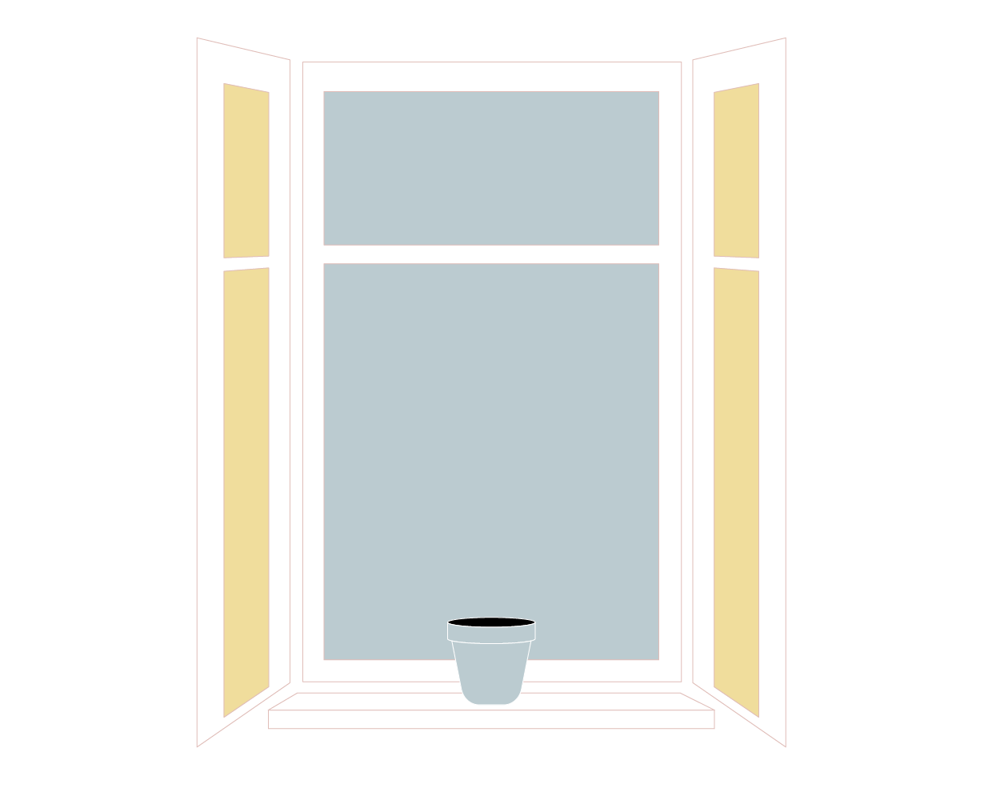
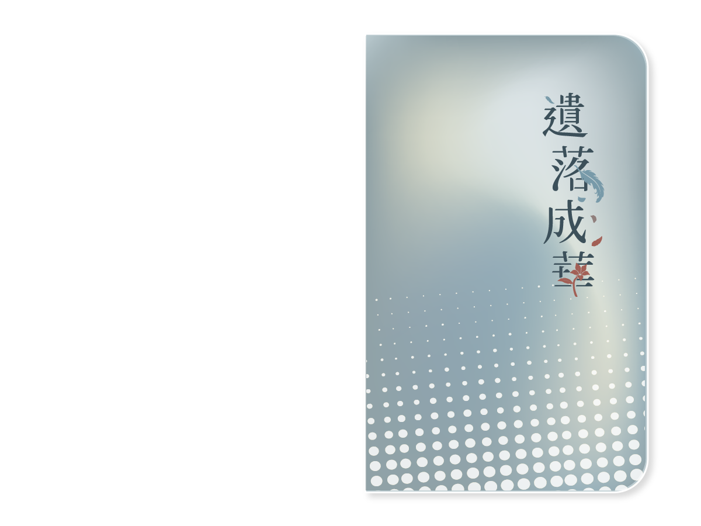
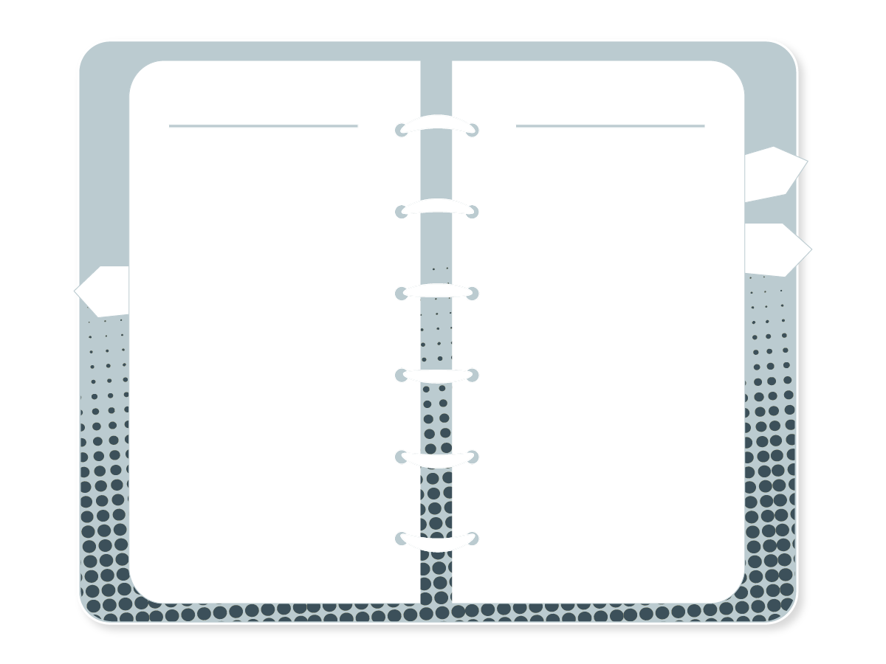
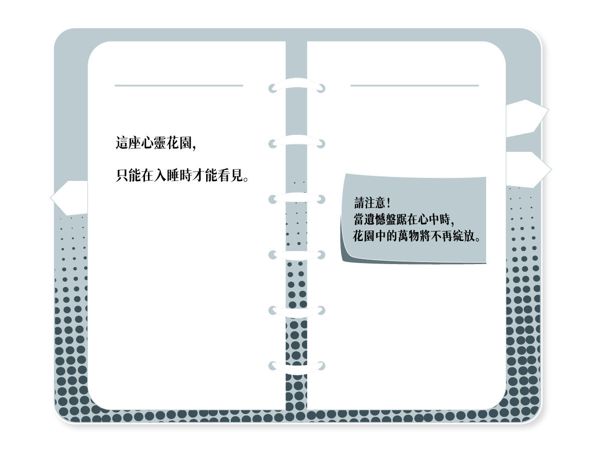
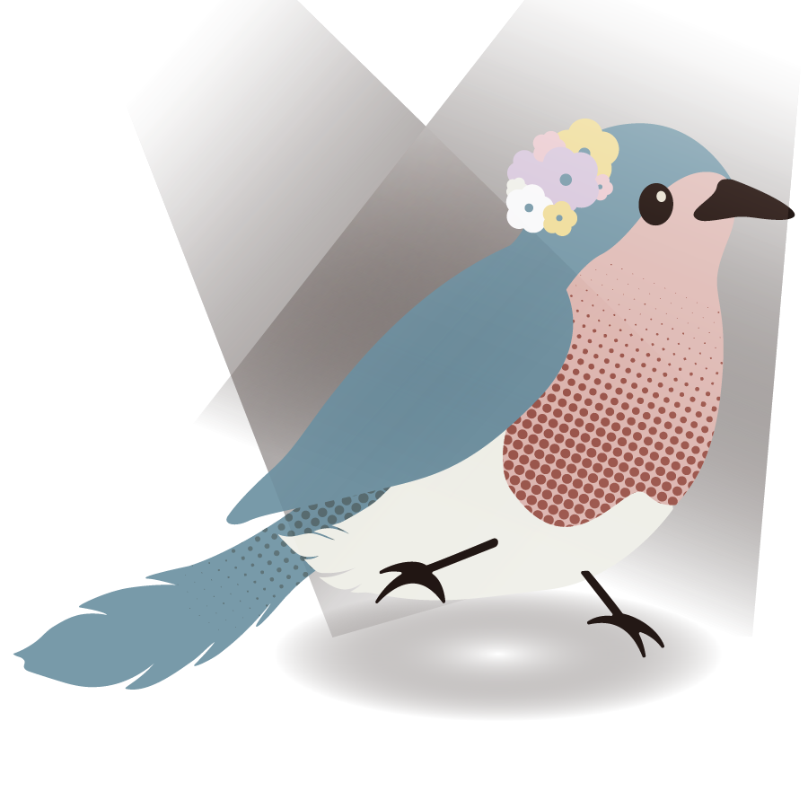
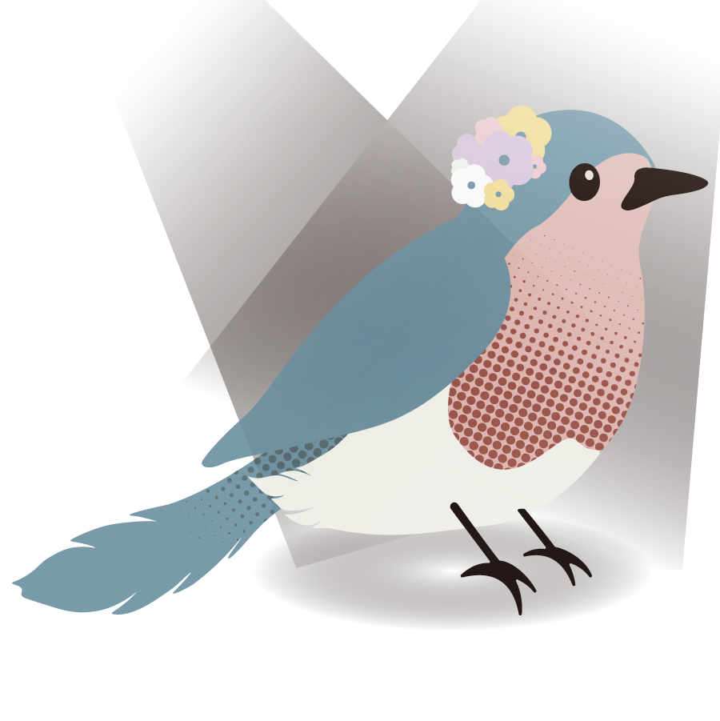
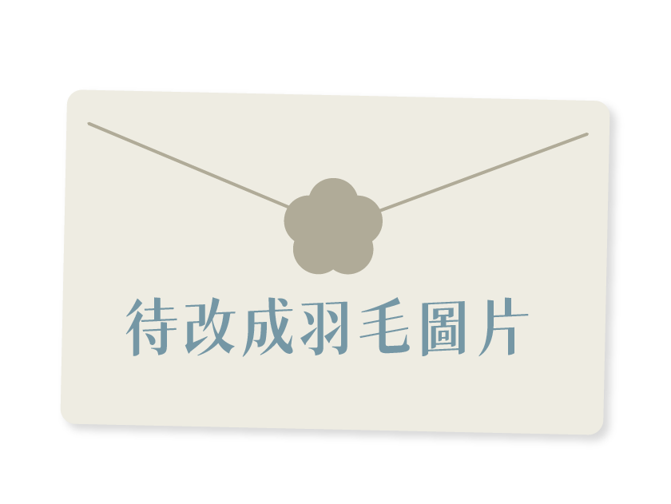
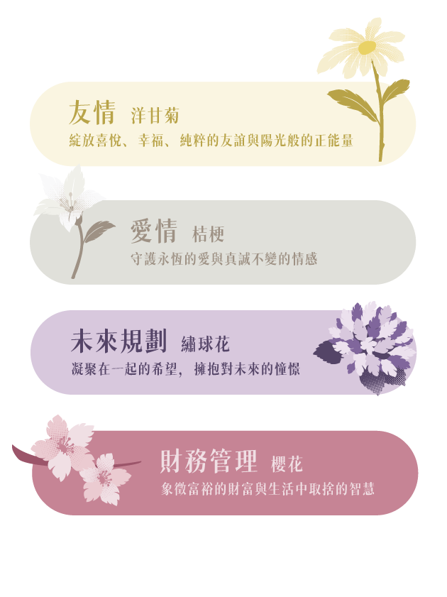

大窗戶
書封面
書翻開
書內頁
管理員鳥 1
管理員鳥 2 管理員鳥 3
管理員鳥 3
大窗戶
書封面
書翻開
書內頁
管理員鳥 1
管理員鳥 2管理員鳥 3
請將手中的信件打開，拿出裡面的羽毛。

請在卡片上簡單地寫下，現在心中第一直覺想到的「遺憾」故事
小提醒：如果沒有書寫工具，我們有筆提供可以借用~
你寫下的遺憾故事，屬於哪一個主題呢？
選好主題後，才能按「我寫好了！」~
透過「實體卡牌」，解讀你心中的遺憾。我們會陪著你一起梳理遺憾，並尊重你的意願，隨時可以停止。
透過線上簡易版卡牌，在專屬且安心的私人空間裡自我探索遺憾的回憶。
這一步無法返回，要注意不要按錯啦~

請找現場的工作人員，我們會陪你一起排卡。（此段文字待編輯）
這一步無法返回哦！

無論你目前心中是否帶著遺憾，都很感謝你今天的到來。我們在現場準備了一份神秘小禮物，只要出示這個畫面即可向工作人員領取！
如果對我們的卡牌套組感到好奇，或想了解更多細節，歡迎隨時找我們聊聊～

請帶著這個畫面，來找我們領取你的信件。
領完信件後，再按下方按鈕關閉畫面。